🏆 EURO 2024 Matches
| Date | Fixture |
Odds |
Win |
Result |
Over ⚽ = over 0.5 ⚽⚽ = over 1.5 ⚽⚽⚽ = over 2.5 ... ► |
Alerts Home 🏥 = Considerable injuries 🏥🏥 = Major injuries 📉 = Dip in form Note, you may see injuries when expanding match but no alert here, meaning the model does not consider them important. |
Alerts Away 🏥 = Considerable injuries 🏥🏥 = Major injuries 📉 = Dip in form Note, you may see injuries when expanding match but no alert here, meaning the model does not consider them important. |
|
|---|---|---|---|---|---|---|---|---|
| Sat. 15 Jun. | Spain 3:0 Croatia Form: WWWW Form: WLDD |
0.97 vs -0.97 | 1.96 | 69% | 1 | ⚽⚽ 2.17 |
📉 Away team has a dip in form recently | |
| Sat. 15 Jun. | Italy 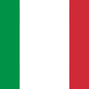 2:1 Albania Form: WWLD Form: WLDL |
0.76 vs -0.76 | 1.4 | 60% | 1 | 😴 0.67 |
📉 Home team has a dip in form recently | 📉 Away team has a dip in form recently |
| Sat. 15 Jun. | Hungary 1:3 Switzerland Form: WLLW Form: DWDD |
-0.09 vs -0.01 | 2.26 | 10% | 1 | ⚽ 1.1 |
📉 Home team has a dip in form recently | 📉 Away team has a dip in form recently |
🏆 Copa America 2024 Matches
| Date | Fixture |
Odds |
Win |
Result |
Over ⚽ = over 0.5 ⚽⚽ = over 1.5 ⚽⚽⚽ = over 2.5 ... ► |
Alerts Home 🏥 = Considerable injuries 🏥🏥 = Major injuries 📉 = Dip in form Note, you may see injuries when expanding match but no alert here, meaning the model does not consider them important. |
Alerts Away 🏥 = Considerable injuries 🏥🏥 = Major injuries 📉 = Dip in form Note, you may see injuries when expanding match but no alert here, meaning the model does not consider them important. |
|---|
🌍 Global Matches
| Date | Fixture |
Odds |
Win |
Result |
Over ⚽ = over 0.5 ⚽⚽ = over 1.5 ⚽⚽⚽ = over 2.5 ... ► |
Alerts Home 🏥 = Considerable injuries 🏥🏥 = Major injuries 📉 = Dip in form Note, you may see injuries when expanding match but no alert here, meaning the model does not consider them important. |
Alerts Away 🏥 = Considerable injuries 🏥🏥 = Major injuries 📉 = Dip in form Note, you may see injuries when expanding match but no alert here, meaning the model does not consider them important. |
|
|---|---|---|---|---|---|---|---|---|
| Sat. 15 Jun. | Manila Montet FC 0:14 Kaya FC-Iloilo Form: LLLL Form: WWWL |
-2.75 vs 2.2 | n/a | 82% | 1 | ⚽⚽⚽⚽⚽⚽⚽⚽⚽ 9.83 |
📉 Home team has a dip in form recently | 📉 Away team has a dip in form recently |
| Sat. 15 Jun. | Cibao FC Unknown 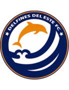 Delfines del Este FC Form: DWWD Form: DLWD |
1.76 vs -2.53 | 1.02 | 78% | None | ⚽ 1.68 |
📉 Away team has a dip in form recently | |
| Sat. 15 Jun. | NWS Spirit 1:0 Western Sydney Wanderers II Form: LLWL Form: WWWL |
-2.03 vs 1.63 | n/a | 76% | 0 | ⚽⚽⚽ 3.16 |
📉 Home team has a dip in form recently | 📉 Away team has a dip in form recently |
| Sat. 15 Jun. | Deportes Recoleta 20:00 Audax Italiano Form: WWLL Form: LLWD |
-1.92 vs 1.27 | 1.64 | 73% | None | ⚽ 1.34 |
📉 Home team has a dip in form recently | 📉 Away team has a dip in form recently |
| Sat. 15 Jun. | Argentina 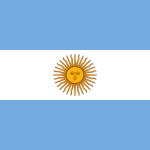 4:1 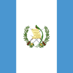 Guatemala Form: WWWW Form: DWWL |
1.25 vs -1.91 | 1.05 | 72% | 1 | 😴 0.55 |
📉 Away team has a dip in form recently | |
| Sat. 15 Jun. | Guatemala 01:00 Argentina Form: DWWL Form: WWWW |
-1.25 vs 1.21 | 1.08 | 72% | None | 😴 0.55 |
📉 Home team has a dip in form recently | |
| Sat. 15 Jun. | FC Elva 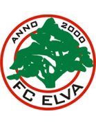 2:3 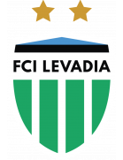 FCI Levadia U21 Form: LLLD Form: LDWL |
-1.77 vs 1.15 | n/a | 71% | 1 | ⚽ 1.85 |
📉 Home team has a dip in form recently | 📉 Away team has a dip in form recently |
| Sat. 15 Jun. | FK Slutsk 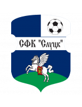 0:5 Dinamo Minsk Form: LWLL Form: WWWW |
-1.38 vs 1.1 | n/a | 71% | 1 | ⚽⚽⚽ 3.49 |
📉 Home team has a dip in form recently | |
| Sat. 15 Jun. | Esperance Tunis 2:0 US Monastir Form: DLWW Form: WLDL |
1.02 vs -1.63 | n/a | 70% | 1 | 😴 0.89 |
📉 Home team has a dip in form recently | 📉 Away team has a dip in form recently |
| Sat. 15 Jun. | Spain 3:0 Croatia Form: WWWW Form: WLDD |
0.97 vs -0.97 | 1.96 | 69% | 1 | ⚽⚽ 2.17 |
📉 Away team has a dip in form recently | |
| Sat. 15 Jun. | True Bangkok United 5:2 after pensafter pens Dragon Pathumwan Kanchanaburi FC Form: WLWW Form: WLWL |
0.96 vs -1.91 | n/a | 68% | 1 | ⚽ 1.83 |
📉 Home team has a dip in form recently | 📉 Away team has a dip in form recently |
| Sat. 15 Jun. | B36 Tórshavn 1:1 B68 Toftir Form: DDDL Form: DLLD |
0.93 vs -1.8 | 1.32 | 67% | 0.5 | ⚽⚽ 2.05 |
📉 Home team has a dip in form recently | 📉 Away team has a dip in form recently |
| Sat. 15 Jun. | Turun Palloseura 1:0 Mikkelin Palloilijat Form: WWWD Form: DLLL |
0.9 vs -1.54 | n/a | 66% | 1 | ⚽⚽ 2.42 |
📉 Away team has a dip in form recently | |
| Sat. 15 Jun. | TB Tvøroyri 1:1 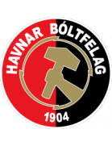 HB Tórshavn II Form: DWLD Form: LWLD |
0.88 vs -1.73 | n/a | 65% | 0.5 | ⚽ 1.59 |
📉 Home team has a dip in form recently | 📉 Away team has a dip in form recently |
| Sat. 15 Jun. | AC Oulu 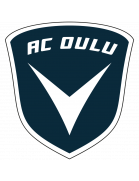 5:1 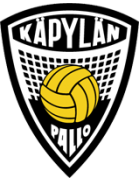 Käpylän Pallo Form: LDWD Form: LLDL |
0.87 vs -1.74 | 1.12 | 65% | 1 | ⚽⚽⚽ 3.67 |
📉 Home team has a dip in form recently | 📉 Away team has a dip in form recently |
| Sat. 15 Jun. | Chongqing Tonglianglong 3:1 Wuxi Wugo Form: DWWW Form: DLLL |
0.84 vs -1.63 | 1.05 | 64% | 1 | ⚽⚽ 2.22 |
📉 Away team has a dip in form recently | |
| Sat. 15 Jun. | CA Boca Juniors 1:0 CA Vélez Sarsfield Form: WLWW Form: DDWL |
0.82 vs -1.7 | n/a | 63% | 1 | ⚽⚽ 2.13 |
📉 Home team has a dip in form recently | 📉 Away team has a dip in form recently |
| Sat. 15 Jun. | FK Tukums 2000 II 1:3 Skanstes SK Form: LLLL Form: WLLL |
0.82 vs -1.43 | n/a | 63% | 0 | ⚽⚽ 2.25 |
📉 Home team has a dip in form recently | 📉 Away team has a dip in form recently |
| Sat. 15 Jun. | Italy 2:1 Albania Form: WWLD Form: WLDL |
0.76 vs -0.76 | 1.4 | 60% | 1 | 😴 0.67 |
📉 Home team has a dip in form recently | 📉 Away team has a dip in form recently |
| Sat. 15 Jun. | JFK Ventspils 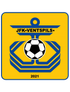 1:1 Riga FC II Form: WLWL Form: DWLW |
-1.12 vs 0.75 | n/a | 60% | 0.5 | ⚽ 1.46 |
📉 Home team has a dip in form recently | 📉 Away team has a dip in form recently |
| Sat. 15 Jun. | Colombia 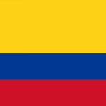 3:0 Bolivia Form: WWWW Form: LLLL |
0.65 vs -1.85 | 1.17 | 56% | 1 | ⚽ 1.79 |
📉 Away team has a dip in form recently | |
| Sat. 15 Jun. | Neftchi Fergana 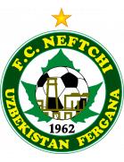 1:1 Surkhon Termiz Form: LWWD Form: WDWL |
0.62 vs -1.21 | n/a | 55% | 0.5 | 😴 0.99 |
📉 Away team has a dip in form recently | |
| Sat. 15 Jun. | Zhejiang FC 3:1 Changchun Yatai Form: LWWL Form: WDDL |
0.6 vs -1.43 | n/a | 54% | 1 | ⚽⚽ 2.3 |
📉 Home team has a dip in form recently | 📉 Away team has a dip in form recently |
| Sat. 15 Jun. | FA Siauliai 3:3 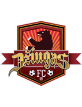 FC Dziugas Telsiai Form: LLDD Form: WWDW |
0.54 vs -1.38 | 1.38 | 52% | 0.5 | ⚽ 1.73 |
📉 Home team has a dip in form recently | |
| Sat. 15 Jun. | Club Plaza Colonia 19:00 IA Sud América Form: WLLW Form: LWWD |
0.53 vs -1.54 | n/a | 51% | None | 😴 0.85 |
🏥 📉 Home team has considerable injuries and a dip in form recently | |
| Sat. 15 Jun. | Club Plaza Colonia 19:00 IA Sud América Form: WLLW Form: LWWD |
0.53 vs -1.54 | n/a | 51% | None | 😴 0.85 |
🏥 📉 Home team has considerable injuries and a dip in form recently | |
| Sat. 15 Jun. | Leevon PPK 4:1 Rezeknes FA Form: LLWL Form: LLLL |
0.49 vs -1.41 | n/a | 49% | 1 | ⚽⚽ 2.1 |
📉 Home team has a dip in form recently | 📉 Away team has a dip in form recently |
| Sat. 15 Jun. | Bumprom Gomel 3:0 Shakhter 2 Soligorsk Form: WDWL Form: WWLL |
0.48 vs -1.14 | n/a | 48% | 1 | ⚽ 1.79 |
📉 Home team has a dip in form recently | 📉 Away team has a dip in form recently |
| Sat. 15 Jun. | Rivers United FC 6:0 Gombe United FC Form: WLWL Form: LLLL |
0.47 vs -1.47 | n/a | 48% | 1 | ⚽⚽ 2.09 |
📉 Home team has a dip in form recently | 📉 Away team has a dip in form recently |
| Sat. 15 Jun. | Shijiazhuang Gongfu 0:0 Shanghai Jiading Huilong Form: WLLD Form: LLWL |
0.46 vs -1.28 | n/a | 47% | 0.5 | 😴 0.72 |
📉 Home team has a dip in form recently | 📉 Away team has a dip in form recently |
| Sat. 15 Jun. | Skála IF 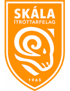 0:4 Víkingur Gøta Form: LWLL Form: LWLW |
-0.6 vs 0.46 | n/a | 47% | 1 | ⚽⚽ 2.92 |
📉 Home team has a dip in form recently | 📉 Away team has a dip in form recently |
| Sat. 15 Jun. | CA Rentistas 22:00 CA Atenas de San Carlos Form: WLDD Form: LWLW |
0.44 vs -1.11 | 1.75 | 45% | None | 😴 0.62 |
📉 Home team has a dip in form recently | 📉 Away team has a dip in form recently |
| Sat. 15 Jun. | Ho Chi Minh City FC 1:1 Thep Xanh Nam Dinh FC Form: WWDD Form: WDDW |
-0.84 vs 0.43 | n/a | 44% | 0.5 | ⚽ 1.66 |
📉 Home team has a dip in form recently | 📉 Away team has a dip in form recently |
| Sat. 15 Jun. | Atlántico FC Unknown Atlético San Cristóbal Form: LLWW Form: LLLW |
0.41 vs -1.41 | 1.1 | 43% | None | ⚽⚽ 2.24 |
📉 Home team has a dip in form recently | 📉 Away team has a dip in form recently |
| Sat. 15 Jun. | Sanfrecce Hiroshima 4:1 Tokyo Verdy Form: WWWL Form: WWWL |
0.39 vs -0.97 | n/a | 41% | 1 | ⚽⚽ 2.25 |
📉 Home team has a dip in form recently | 📉 Away team has a dip in form recently |
| Sat. 15 Jun. | Red Bull Bragantino 1:1' Esporte Clube Juventude Form: WLWL Form: LDWL |
0.39 vs -1.08 | n/a | 41% | None | ⚽ 1.47 |
📉 Home team has a dip in form recently | 📉 Away team has a dip in form recently |
| Sat. 15 Jun. | Neman Grodno 1:0 BATE Borisov Form: WWWL Form: WLWL |
0.39 vs -1.0 | n/a | 41% | 1 | ⚽⚽ 2.42 |
📉 Home team has a dip in form recently | 📉 Away team has a dip in form recently |
| Sat. 15 Jun. | Belshina Bobruisk 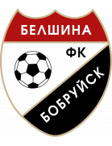 1:1 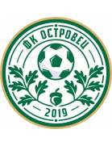 FK Ostrovets Form: WLDW Form: WDDW |
0.38 vs -1.11 | n/a | 41% | 0.5 | ⚽⚽ 2.47 |
📉 Home team has a dip in form recently | 📉 Away team has a dip in form recently |
| Sat. 15 Jun. | Atlético Ottawa 1:2 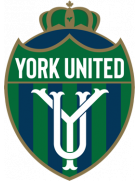 York United FC Form: WWDL Form: DWLD |
0.36 vs -1.08 | 1.66 | 39% | 0 | ⚽ 1.93 |
📉 Home team has a dip in form recently | 📉 Away team has a dip in form recently |
| Sat. 15 Jun. | Heilongjiang Ice City 1:2 Guangxi Pingguo Haliao Form: LDWL Form: LWDW |
-1.02 vs 0.34 | n/a | 37% | 1 | ⚽ 1.87 |
📉 Home team has a dip in form recently | |
| Sat. 15 Jun. | Dalian Yingbo 0:3 Yunnan Yukun Form: LDLW Form: WDWW |
-0.62 vs 0.32 | 1.86 | 36% | 1 | ⚽ 1.06 |
📉 Home team has a dip in form recently | |
| Sat. 15 Jun. | Solomon Islands 0:1 Vanuatu Form: WLLL Form: LLWL |
0.32 vs -0.94 | n/a | 35% | 0 | ⚽⚽⚽ 3.74 |
📉 Home team has a dip in form recently | 📉 Away team has a dip in form recently |
| Sat. 15 Jun. | FC Hegelmann 3:2 FK Suduva Marijampole Form: WWWW Form: LWLD |
0.31 vs -1.08 | n/a | 35% | 1 | ⚽⚽ 2.16 |
📉 Away team has a dip in form recently | |
| Sat. 15 Jun. | Sepahan FC 2:1 Gol Gohar Sirjan FC Form: WWWW Form: LLLL |
0.31 vs -1.3 | n/a | 35% | 1 | ⚽ 1.37 |
🏥 📉 Away team has considerable injuries and a dip in form recently | |
| Sat. 15 Jun. | Gwangju FC 2:0 Gimcheon Sangmu Form: WWLL Form: LLWW |
-0.97 vs 0.29 | 3.7 | 33% | 0 | ⚽ 1.7 |
📉 Home team has a dip in form recently | 📉 Away team has a dip in form recently |
| Sat. 15 Jun. | América Futebol Clube (MG) 2:1 Clube de Regatas Brasil (AL) Form: LWWL Form: LLWD |
0.29 vs -1.0 | n/a | 33% | 1 | ⚽⚽ 2.7 |
📉 Home team has a dip in form recently | 📉 Away team has a dip in form recently |
| Sat. 15 Jun. | Loyola FC 4:1 Mendiola FC 1991 Form: WLDW Form: LLLW |
0.28 vs -1.16 | n/a | 33% | 1 | ⚽⚽⚽⚽ 4.24 |
📉 Home team has a dip in form recently | 📉 Away team has a dip in form recently |
| Sat. 15 Jun. | DFK Dainava Alytus 0:0 FK Kauno Zalgiris Form: WLDD Form: WWDD |
-0.91 vs 0.28 | n/a | 32% | 0.5 | ⚽ 1.28 |
📉 Home team has a dip in form recently | 📉 Away team has a dip in form recently |
| Sat. 15 Jun. | Atlético Pantoja Unknown Atlético Vega Real Form: LLWD Form: LDDW |
0.26 vs -1.01 | n/a | 30% | None | ⚽ 1.08 |
📉 Home team has a dip in form recently | 📉 Away team has a dip in form recently |
| Sat. 15 Jun. | Kyoto Sanga 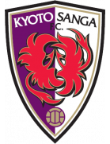 2:0 Hokkaido Consadole Sapporo Form: DDWW Form: DWWL |
0.25 vs -1.27 | n/a | 30% | 1 | ⚽ 1.74 |
🏥 📉 Away team has considerable injuries and a dip in form recently | |
| Sat. 15 Jun. | Pärnu JK Vaprus 1:4 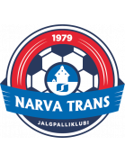 JK Trans Narva Form: DDLL Form: WWWW |
0.25 vs -1.01 | 2.66 | 30% | 0 | ⚽⚽ 2.42 |
📉 Home team has a dip in form recently | |
| Sat. 15 Jun. | FK Banga Gargzdai 2:0 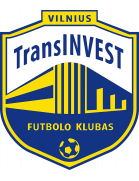 FK TransINVEST Form: WLLW Form: WLLW |
0.25 vs -0.93 | n/a | 30% | 1 | ⚽ 1.86 |
📉 Home team has a dip in form recently | 📉 Away team has a dip in form recently |
| Sat. 15 Jun. | Aluminium Arak FC 3:5 after pensafter pens Mes Rafsanjan Form: WLDL Form: LLWL |
0.24 vs -0.86 | n/a | 29% | 0 | ⚽ 1.9 |
📉 Home team has a dip in form recently | 📉 Away team has a dip in form recently |
| Sat. 15 Jun. | Club Nacional 21:30 Liverpool FC Montevideo Form: LWLW Form: LLLL |
0.23 vs -0.87 | n/a | 29% | None | ⚽⚽ 2.18 |
📉 Home team has a dip in form recently | 📉 Away team has a dip in form recently |
| Sat. 15 Jun. | Independiente Santa Fe 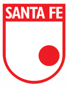 18:30 Atlético Bucaramanga Form: WWWL Form: DLWW |
0.23 vs -0.84 | n/a | 28% | None | 😴 0.88 |
📉 Home team has a dip in form recently | 📉 Away team has a dip in form recently |
| Sat. 15 Jun. | Dynamo Brest 6:1 Dnepr Mogilev Form: WLLW Form: LLLL |
0.22 vs -0.77 | n/a | 27% | 1 | ⚽⚽ 2.35 |
📉 Home team has a dip in form recently | 📉 Away team has a dip in form recently |
| Sat. 15 Jun. | CA Huracán 1:0' CS Independiente Rivadavia Form: WWWW Form: WLLL |
0.19 vs -1.0 | n/a | 25% | None | ⚽ 1.13 |
📉 Away team has a dip in form recently | |
| Sat. 15 Jun. | Khosilot Farkhor 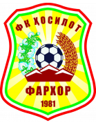 15:00 FK Istaravshan Form: LWDD Form: LDWW |
0.18 vs -0.78 | n/a | 24% | None | 😴 0.72 |
📉 Home team has a dip in form recently | |
| Sat. 15 Jun. | CA River Plate Montevideo 1:1 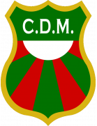 Club Deportivo Maldonado Form: LDLD Form: LDLD |
0.17 vs -1.02 | n/a | 24% | 0.5 | ⚽ 1.38 |
📉 Home team has a dip in form recently | 📉 Away team has a dip in form recently |
| Sat. 15 Jun. | Jeonnam Dragons 1:1 Bucheon FC 1995 Form: WWDD Form: DWDL |
0.17 vs -0.96 | 2.28 | 24% | 0.5 | ⚽ 1.4 |
📉 Home team has a dip in form recently | 📉 Away team has a dip in form recently |
| Sat. 15 Jun. | FK Liepaja 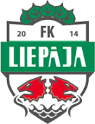 1:1 BFC Daugavpils Form: DDLL Form: LLLD |
0.16 vs -0.87 | n/a | 23% | 0.5 | ⚽ 1.43 |
📉 Home team has a dip in form recently | 📉 Away team has a dip in form recently |
| Sat. 15 Jun. | Sydney Olympic FC 1:1 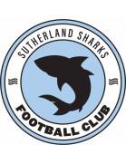 Sutherland Sharks FC Form: WWLW Form: LWDW |
0.14 vs -1.01 | n/a | 21% | 0.5 | ⚽ 1.48 |
📉 Home team has a dip in form recently | |
| Sat. 15 Jun. | FK Khujand 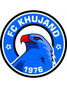 13:30 Vakhsh Bokhtar Form: WWDD Form: LWLL |
0.12 vs -1.12 | n/a | 20% | None | 😴 0.29 |
📉 Home team has a dip in form recently | 📉 Away team has a dip in form recently |
| Sat. 15 Jun. | Etoile Sportive du Sahel 1:2 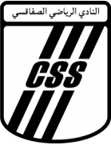 CS Sfaxien Form: DLDL Form: WDLW |
0.12 vs -0.87 | 2.08 | 19% | 0 | 😴 0 |
📉 Home team has a dip in form recently | 📉 Away team has a dip in form recently |
| Sat. 15 Jun. | Kalev Tallinn 2:5 Paide Linnameeskond Form: DLLL Form: LLLW |
-0.82 vs 0.12 | 1.58 | 19% | 1 | ⚽⚽ 2.05 |
📉 Home team has a dip in form recently | 📉 Away team has a dip in form recently |
| Sat. 15 Jun. | Liaoning Tieren 0:1 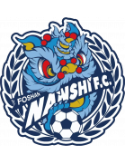 Foshan Nanshi Form: LDDW Form: DLDW |
0.09 vs -0.83 | n/a | 18% | 0 | ⚽ 1.45 |
📉 Home team has a dip in form recently | 📉 Away team has a dip in form recently |
| Sat. 15 Jun. | Melville United 03:00 Tauranga City AFC Form: LLWL Form: WWWD |
0.09 vs -0.89 | n/a | 17% | None | ⚽⚽⚽⚽ 4.09 |
📉 Home team has a dip in form recently | |
| Sat. 15 Jun. | NSÍ Runavík II 2:1 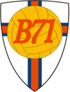 B71 Sandoy Form: DWWW Form: DDLL |
0.08 vs -0.75 | n/a | 16% | 1 | ⚽⚽ 2.12 |
📉 Away team has a dip in form recently | |
| Sat. 15 Jun. | Plateau United FC 1:1 Kano Pillars Form: LWWD Form: DLDW |
0.06 vs -1.01 | n/a | 15% | 0.5 | ⚽ 1.84 |
📉 Away team has a dip in form recently | |
| Sat. 15 Jun. | Dalvík/Reynir 0:0 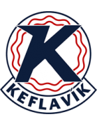 Keflavík ÍF Form: LLWL Form: LWLD |
0.06 vs -0.89 | 3.45 | 15% | 0.5 | ⚽⚽ 2.53 |
📉 Home team has a dip in form recently | 📉 Away team has a dip in form recently |
| Sat. 15 Jun. | 07 Vestur 19:00 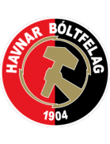 HB Tórshavn Form: WLDL Form: LWLL |
-0.43 vs 0.06 | 1.43 | 15% | None | ⚽⚽ 2.61 |
📉 Home team has a dip in form recently | 📉 Away team has a dip in form recently |
| Sat. 15 Jun. | Avaí FC 3:2 Guarani Futebol Clube (SP) Form: WDWD Form: LLDL |
0.02 vs -0.85 | n/a | 11% | 1 | ⚽ 1.1 |
📉 Home team has a dip in form recently | 📉 Away team has a dip in form recently |
| Sat. 15 Jun. | FK Lida 1:0 Energetik-BGU Minsk Form: WWWL Form: WLLL |
0.01 vs -1.12 | n/a | 11% | 1 | ⚽ 1.72 |
🏥 📉 Home team has considerable injuries and a dip in form recently | 📉 Away team has a dip in form recently |
| Sat. 15 Jun. | Labasa FC 02:30 Rewa FA Form: WWWD Form: DWWL |
-0.45 vs -0.01 | n/a | 10% | None | ⚽ 1.21 |
📉 Away team has a dip in form recently | |
| Sat. 15 Jun. | Hungary 1:3 Switzerland Form: WLLW Form: DWDD |
-0.09 vs -0.01 | 2.26 | 10% | 1 | ⚽ 1.1 |
📉 Home team has a dip in form recently | 📉 Away team has a dip in form recently |
| Sat. 15 Jun. | Seongnam FC 3:1 FC Anyang Form: WWLL Form: WLWD |
-0.01 vs -0.8 | 2.88 | 10% | 1 | ⚽ 1.93 |
📉 Home team has a dip in form recently | 📉 Away team has a dip in form recently |
| Sat. 15 Jun. | Katsina United FC 2:0 Doma United Form: WLWL Form: LLLD |
-0.01 vs -0.88 | n/a | 10% | 1 | 😴 0.7 |
📉 Home team has a dip in form recently | 📉 Away team has a dip in form recently |
| Sat. 15 Jun. | Kagoshima United 2:1 Montedio Yamagata Form: DLWW Form: DWLD |
-0.79 vs -0.02 | n/a | 10% | 0 | ⚽ 1.28 |
📉 Home team has a dip in form recently | 📉 Away team has a dip in form recently |
| Sat. 15 Jun. | Barqchi Hisor 15:00 Panjshir Balch Form: LLLL Form: LWLD |
-0.02 vs -0.98 | n/a | 10% | None | ⚽ 1.59 |
📉 Home team has a dip in form recently | 📉 Away team has a dip in form recently |
| Sat. 15 Jun. | Barqchi Hisor 15:00 Panjshir Balch Form: LLLL Form: LWLD |
-0.02 vs -0.98 | n/a | 10% | None | ⚽ 1.59 |
📉 Home team has a dip in form recently | 📉 Away team has a dip in form recently |
| Sat. 15 Jun. | Deportivo Llacuabamba 21:30 Alianza Universidad Form: WLWW Form: WWDW |
-0.61 vs -0.03 | 1.9 | 9% | None | ⚽⚽ 2.89 |
📉 Home team has a dip in form recently | |
| Sat. 15 Jun. | Fujieda MYFC 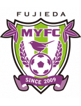 1:3 Yokohama FC Form: WLWL Form: WWWW |
-0.66 vs -0.04 | 1.74 | 9% | 1 | ⚽ 1.59 |
📉 Home team has a dip in form recently | |
| Sat. 15 Jun. | Gangwon FC 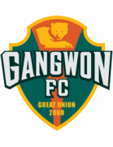 3:1 Suwon FC Form: WWWL Form: WLLW |
-0.05 vs -0.84 | n/a | 9% | 1 | ⚽⚽ 2.03 |
🏥 📉 Home team has considerable injuries and a dip in form recently | 📉 Away team has a dip in form recently |
| Sat. 15 Jun. | Utsiktens BK 0:1 Varbergs BoIS Form: WLLL Form: WDDW |
-0.06 vs -0.77 | 1.89 | 9% | 0 | ⚽ 1.74 |
📉 Home team has a dip in form recently | 📉 Away team has a dip in form recently |
| Sat. 15 Jun. | Tobol Kostanay 1:0 Kairat Almaty Form: LWLD Form: WDWW |
-0.07 vs -0.68 | 1.72 | 9% | 1 | ⚽ 1.46 |
📉 Home team has a dip in form recently | |
| Sat. 15 Jun. | Hills United 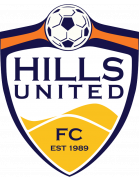 2:3 Sydney United 58 FC Form: LLLW Form: WLLL |
-0.07 vs -0.66 | n/a | 9% | 0 | ⚽⚽ 2.74 |
📉 Home team has a dip in form recently | 📉 Away team has a dip in form recently |
| Sat. 15 Jun. | FC Heartland 1:0 Niger Tornadoes Form: WLWL Form: DWLW |
-0.07 vs -0.83 | n/a | 9% | 1 | ⚽ 1.07 |
📉 Home team has a dip in form recently | 📉 Away team has a dip in form recently |
| Sat. 15 Jun. | Kalju FC 0:0 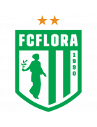 FC Flora Tallinn Form: WDLD Form: WWWD |
-0.08 vs -0.66 | n/a | 8% | 0.5 | ⚽⚽ 2.09 |
📉 Home team has a dip in form recently | |
| Sat. 15 Jun. | Wollongong Wolves FC 2:2 Blacktown City FC Form: LLDW Form: WWLD |
-0.08 vs -0.28 | n/a | 8% | 0.5 | ⚽⚽ 2.53 |
📉 Home team has a dip in form recently | 📉 Away team has a dip in form recently |
| Sat. 15 Jun. | Henan FC 2:1 Beijing Guoan Form: DWWW Form: LDWL |
-0.43 vs -0.08 | 2.44 | 8% | 0 | ⚽⚽ 2.7 |
📉 Away team has a dip in form recently | |
| Sat. 15 Jun. | New York City FC 2:3 Columbus Crew Form: WLLL Form: LWLW |
-0.1 vs -0.46 | n/a | 8% | 0 | ⚽ 1.3 |
📉 Home team has a dip in form recently | 📉 Away team has a dip in form recently |
| Sat. 15 Jun. | Philippine Army FC 0:1 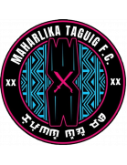 Maharlika Taguig FC Form: LLLL Form: LDLW |
-0.1 vs -0.61 | n/a | 8% | 0 | ⚽⚽⚽ 3.26 |
📉 Home team has a dip in form recently | 📉 Away team has a dip in form recently |
| Sat. 15 Jun. | Nanjing City 2:1 Qingdao Red Lions Form: WDWW Form: DWLL |
-0.11 vs -0.54 | n/a | 8% | 1 | ⚽ 1.06 |
📉 Away team has a dip in form recently | |
| Sat. 15 Jun. | AB Argir 1:1 FC Suduroy Form: LDLD Form: WWLD |
-0.12 vs -0.38 | n/a | 8% | 0.5 | ⚽⚽ 2.86 |
📉 Home team has a dip in form recently | 📉 Away team has a dip in form recently |
| Sat. 15 Jun. | Associação Atlética Ponte Preta 1:0 Grêmio Novorizontino Form: LWLW Form: WLDW |
-0.12 vs -0.63 | n/a | 8% | 1 | ⚽ 1.09 |
📉 Home team has a dip in form recently | 📉 Away team has a dip in form recently |
| Sat. 15 Jun. | Shakhter Karaganda 0:3 FK Atyrau Form: LLLL Form: WWWD |
-0.14 vs -0.86 | 2.0 | 7% | 0 | 😴 0.53 |
📉 Home team has a dip in form recently | |
| Sat. 15 Jun. | El Salvador 0:1 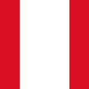 Peru Form: DDWL Form: WDWD |
-0.14 vs -0.68 | n/a | 7% | 0 | 😴 0 |
📉 Home team has a dip in form recently | 📉 Away team has a dip in form recently |
| Sat. 15 Jun. | Western Springs AFC 06:30 Eastern Suburbs AFC Form: WWDL Form: WDWW |
-0.23 vs -0.15 | n/a | 7% | None | ⚽ 1.83 |
📉 Home team has a dip in form recently | |
| Sat. 15 Jun. | Academia Deportiva Cantolao 19:15 Universidad San Martín de Porres Form: LLDL Form: DLWD |
-0.78 vs -0.16 | n/a | 7% | None | ⚽ 1.26 |
📉 Home team has a dip in form recently | 📉 Away team has a dip in form recently |
| Sat. 15 Jun. | Lobi Stars FC 4:3 Kwara United FC Form: WLWL Form: LWLW |
-0.79 vs -0.16 | n/a | 7% | 0 | ⚽ 1.13 |
📉 Home team has a dip in form recently | 📉 Away team has a dip in form recently |
| Sat. 15 Jun. | Pohang Steelers 1:1 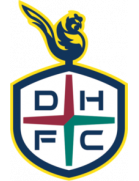 Daejeon Hana Citizen Form: WLDW Form: DLWL |
-0.17 vs -0.87 | 1.77 | 7% | 0.5 | ⚽⚽ 2.07 |
📉 Home team has a dip in form recently | 📉 Away team has a dip in form recently |
| Sat. 15 Jun. | Hong Linh Ha Tinh FC 1:1 The Cong - Viettel FC Form: LWDL Form: WWDD |
-0.73 vs -0.17 | n/a | 7% | 0.5 | ⚽ 1.23 |
🏥 📉 Home team has considerable injuries and a dip in form recently | 📉 Away team has a dip in form recently |
| Sat. 15 Jun. | FK Smiltene/BJSS 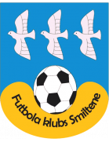 0:1 Mārupes SC Form: LLDW Form: WWLW |
-0.17 vs -0.58 | n/a | 7% | 0 | ⚽ 1.37 |
📉 Home team has a dip in form recently | 📉 Away team has a dip in form recently |
| Sat. 15 Jun. | Gefle IF 1:2 Landskrona BoIS Form: LWLL Form: WWWW |
-0.18 vs -0.35 | n/a | 6% | 0 | ⚽⚽ 2.09 |
📉 Home team has a dip in form recently | |
| Sat. 15 Jun. | Kaysar Kyzylorda 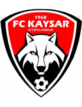 1:1 FK Turan Form: WLWD Form: LLDD |
-0.37 vs -0.19 | 1.1 | 6% | 0.5 | ⚽ 1.73 |
📉 Home team has a dip in form recently | 📉 Away team has a dip in form recently |
| Sat. 15 Jun. | CS Cerrito 19:30 Albion FC Form: LLWW Form: DLDW |
-0.2 vs -0.61 | n/a | 6% | None | ⚽ 1.38 |
📉 Home team has a dip in form recently | 📉 Away team has a dip in form recently |
| Sat. 15 Jun. | CSD Cooper 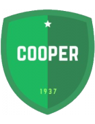 0:1 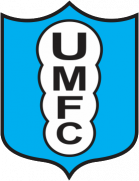 Uruguay Montevideo FC Form: LWLD Form: WWWW |
-0.53 vs -0.2 | 2.5 | 6% | 1 | ⚽ 1.46 |
📉 Home team has a dip in form recently | 🏥 Away team has considerable injuries |
| Sat. 15 Jun. | Yokohama F. Marinos 1:3 Machida Zelvia Form: LWLW Form: WDLW |
-0.21 vs -0.21 | n/a | 6% | 0 | ⚽⚽ 2.86 |
📉 Home team has a dip in form recently | 🏥 📉 Away team has considerable injuries and a dip in form recently |
| Sat. 15 Jun. | HFX Wanderers FC 2:2 Forge FC Form: LDDD Form: WLWL |
-0.31 vs -0.23 | n/a | 5% | 0.5 | ⚽ 1.75 |
📉 Home team has a dip in form recently | 📉 Away team has a dip in form recently |
| Sat. 15 Jun. | FC Qizilqum 3:3 FK Andijon Form: LDLD Form: DDLD |
-0.23 vs -0.48 | n/a | 5% | 0.5 | ⚽ 1.63 |
📉 Home team has a dip in form recently | 📉 Away team has a dip in form recently |
| Sat. 15 Jun. | Detroit City FC 2:0 Charleston Battery Form: LLLW Form: LDDL |
-0.38 vs -0.24 | 2.04 | 5% | 0 | ⚽⚽ 2.18 |
📉 Home team has a dip in form recently | 📉 Away team has a dip in form recently |
| Sat. 15 Jun. | St George Saints FC 0:2 St. George City FA Form: WDWL Form: WLWL |
-0.24 vs -0.26 | n/a | 5% | 0 | ⚽⚽ 2.19 |
📉 Home team has a dip in form recently | 📉 Away team has a dip in form recently |
| Sat. 15 Jun. | Fjölnir Reykjavík 1:0 Thór Akureyri Form: DWLD Form: LDLD |
-0.24 vs -0.49 | n/a | 5% | 1 | ⚽⚽ 2.04 |
📉 Home team has a dip in form recently | 📉 Away team has a dip in form recently |
| Sat. 15 Jun. | Ituano Futebol Clube (SP) 3:5' Paysandu SC Form: LLDD Form: LWDW |
-0.25 vs -0.37 | n/a | 5% | None | ⚽ 1.6 |
📉 Home team has a dip in form recently | |
| Sat. 15 Jun. | Song Lam Nghe An FC 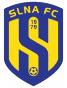 0:1 Dong A Thanh Hoa FC Form: WDLL Form: LDWD |
-0.27 vs -0.59 | 1.88 | 5% | 0 | ⚽ 1.53 |
📉 Home team has a dip in form recently | 🏥 📉 Away team has considerable injuries and a dip in form recently |
| Sat. 15 Jun. | Leiknir Reykjavík 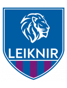 2:3 UMF Grindavík Form: LLLW Form: DWDD |
-0.28 vs -0.42 | n/a | 4% | 0 | ⚽⚽ 2.6 |
📉 Home team has a dip in form recently | 📉 Away team has a dip in form recently |
| Sat. 15 Jun. | Stade Tunisien Unknown Club Africain Tunis Form: WDDD Form: WLDD |
-0.28 vs -0.37 | n/a | 4% | None | 😴 0.78 |
📉 Home team has a dip in form recently | 📉 Away team has a dip in form recently |
| Sat. 15 Jun. | US Souf 0:4 JS Kabylie Form: LLLL Form: DDDW |
-0.75 vs -0.31 | n/a | 4% | 1 | ⚽⚽ 2.51 |
📉 Home team has a dip in form recently | 🏥 📉 Away team has considerable injuries and a dip in form recently |
| Sat. 15 Jun. | Loudoun United FC 1:1 Las Vegas Lights FC Form: LLDD Form: WDDD |
-0.32 vs -0.6 | n/a | 4% | 0.5 | ⚽⚽ 2.03 |
📉 Home team has a dip in form recently | 📉 Away team has a dip in form recently |
| Sat. 15 Jun. | Khanh Hoa FC 0:5 Quang Nam FC Form: LLLD Form: LLWW |
-0.32 vs -0.66 | n/a | 4% | 0 | ⚽⚽ 2.36 |
📉 Home team has a dip in form recently | 📉 Away team has a dip in form recently |
| Sat. 15 Jun. | Universidad O&M FC 23:00 Moca FC Form: DDWW Form: DWWW |
-0.38 vs -0.32 | n/a | 4% | None | 😴 0.85 |
||
| Sat. 15 Jun. | Valour FC 2:3 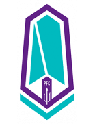 Pacific FC Form: WDWL Form: LLDD |
-0.33 vs -0.4 | n/a | 3% | 0 | ⚽ 1.41 |
📉 Home team has a dip in form recently | 📉 Away team has a dip in form recently |
| Sat. 15 Jun. | Skövde AIK 0:2 Degerfors IF Form: LDLL Form: WDWW |
-0.37 vs -0.35 | 1.85 | 3% | 1 | ⚽ 1.92 |
📉 Home team has a dip in form recently | |
| Sat. 15 Jun. | Cerezo Osaka 2:1 Urawa Red Diamonds Form: LDWW Form: LLDL |
-0.55 vs -0.42 | n/a | 2% | 0 | ⚽ 1.39 |
🏥 📉 Away team has considerable injuries and a dip in form recently | |
| Sat. 15 Jun. | Gyeongnam FC 0:0 Suwon Samsung Bluewings Form: DLLD Form: DLWD |
-0.48 vs -0.45 | n/a | 1% | 0.5 | ⚽ 1.58 |
📉 Home team has a dip in form recently | 🏥 📉 Away team has considerable injuries and a dip in form recently |
| Sat. 15 Jun. | CA Unión (Santa Fe) 2:1 CA San Lorenzo de Almagro Form: DWWW Form: DLWL |
-0.71 vs -0.48 | n/a | 0% | 0 | 😴 0.33 |
🏥 📉 Away team has considerable injuries and a dip in form recently |
Last updated 13:10:58 2024-06-26
Privacy Policy - 18+. Gamble Responsibly. - Terms